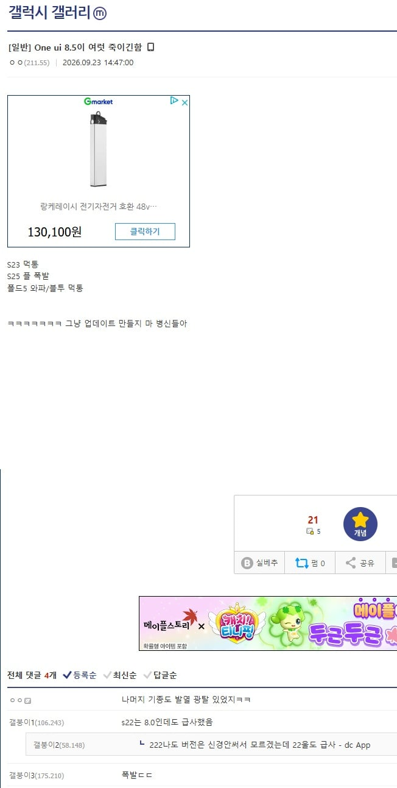
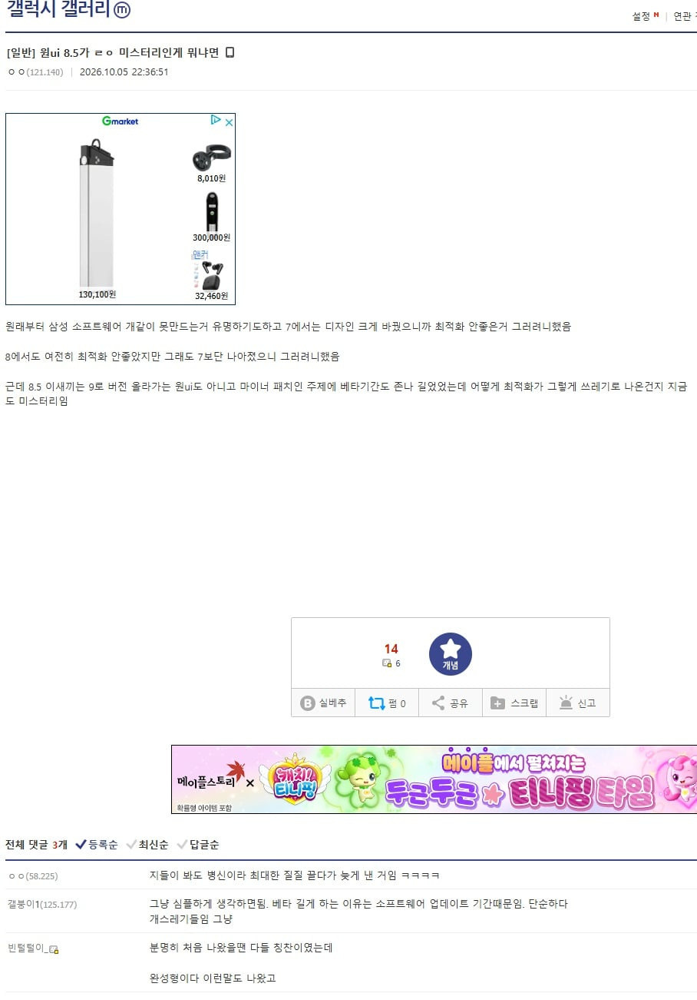
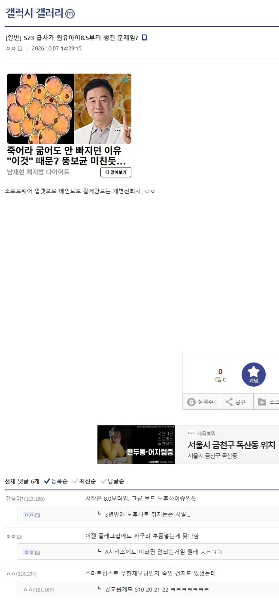
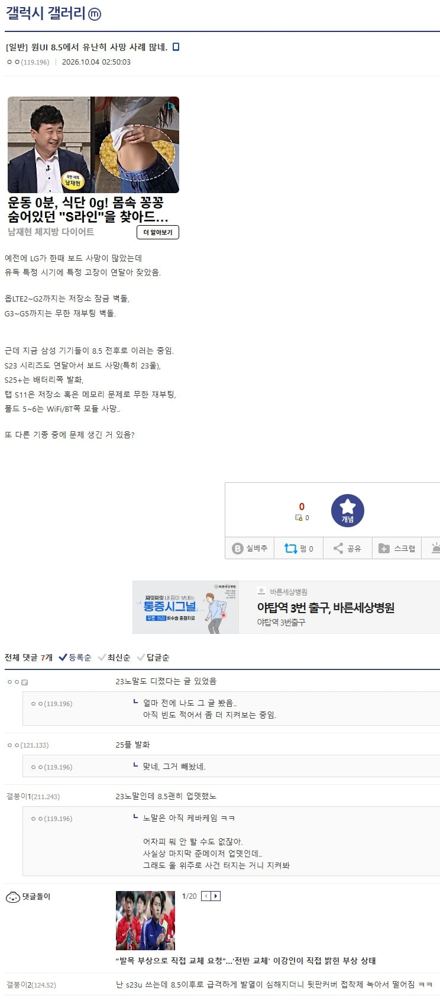
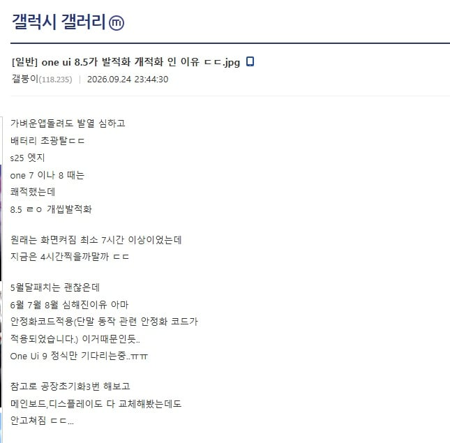
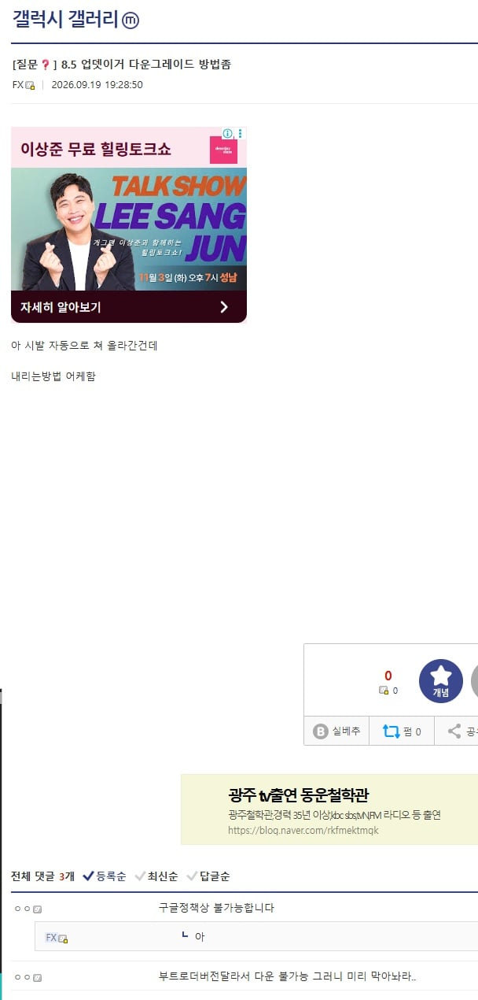
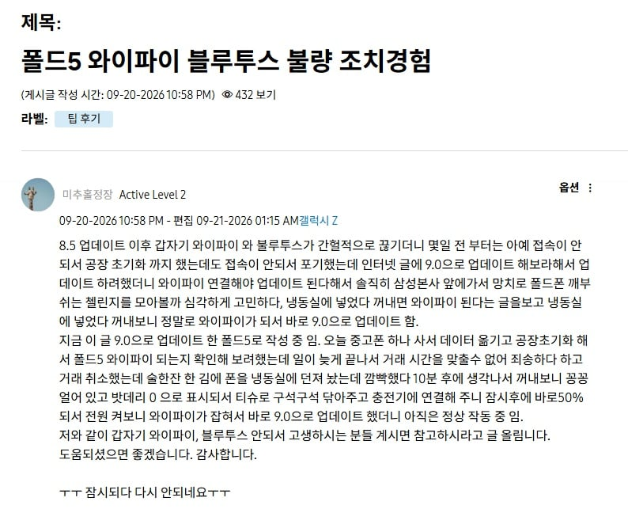

8.5 소프트웨어 업데이트로 폰이 느려지는걸 넘어서 폰을 망가트림
폴드5, 폴드6는 블루투스 와이파이 먹통
s23 먹통
s25 플 먹통
업데이트 하면 발열이 심해져서 보드나 여러 부품에 문제가 생기는거 같은데
내 폴드5도 업데이트하고 와이파이 블루투스 먹통됨

냉동실에 넣어놓으면 잠시 된다고 해서 사람들 냉동실에 스마트폰 넣어놓는 웃지못할 일이 일어나고 있음
아니면 다운그레이드 방법 찾아서 알아보고 있던가
삼성은 당연히 인정안하고 그냥 메인보드가 노후화되서 고장났다고 하며
폴드5의 경우 메인보드 교체비용 70만원을 요구함
그런데 어디에서도 아직 이슈화가 되고 있지 않음
지금 삼성 멤버스 게시판 분위기는 매우 흉흉함
해결됨: 폴드5 UI8.5 블루투스 장애 집단 민원갑시다 - Samsung Members
잇섭에서 한번 제대로 다뤄봤으면 좋겠네...
25는 9.0 떠서 그거로 업뎃하면 댐